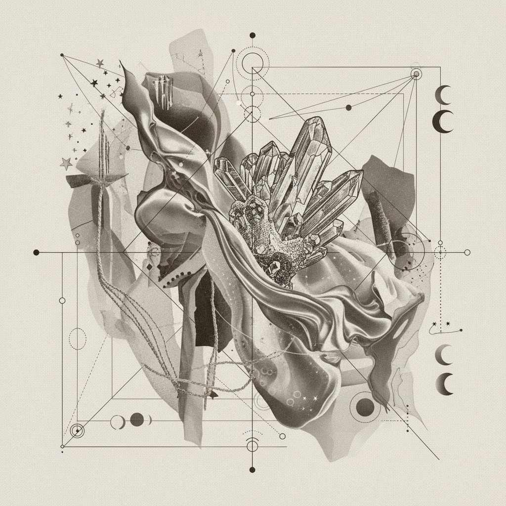
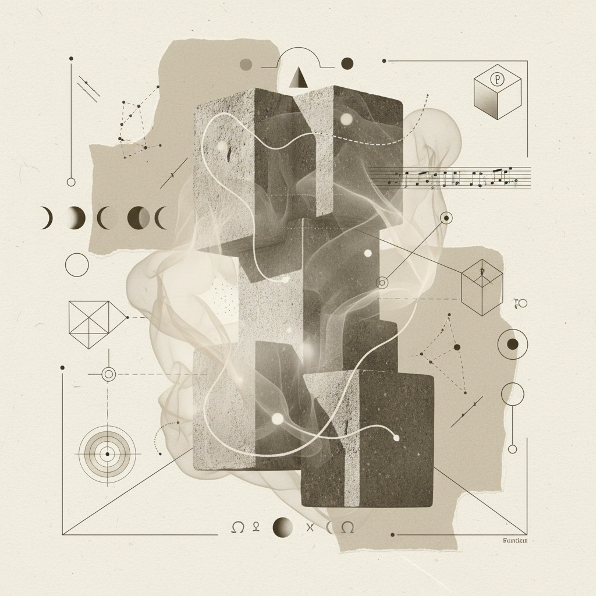

Womb Structuring
to Bone
An archetypal inquiry into the transmutation of soft care into long-term architectural foundations.

The passage from the fluid, maternal safety of Cancer (Full Moon) into the calcified, enduring discipline of Capricorn (New Moon).
Body Correspondence
14-Day Protocol Summary
Phase: Somatic HardeningThe Fluid Container
Soft tissue release focusing on the solar plexus. Establishing the emotional baseline before the crystallization begins.
Calcification Ritual
Static weight-bearing exercises. Connecting the breath to the density of the skeletal structure.
The Final Seal
Integrative stillness. Documenting the shift from felt-sense to structural integrity in the research logs.
Somatic Research Prompts
-
Prompt_01
"Where does the softness of your empathy meet the hardness of your boundaries?"
-
Prompt_02
"Visualize your knee joints as the foundation of an ancient library. What weight are they supporting?"
